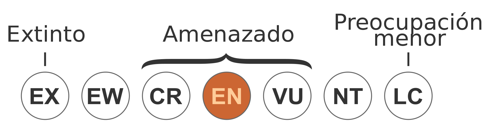

Bienvenido
Este sitio esta echo por, para y sobre tortugas, se veran, curiosidades, datos, recomendaciones, etc. de este preciado animal, empezando por:
Este sitio esta echo por, para y sobre tortugas, se veran, curiosidades, datos, recomendaciones, etc. de este preciado animal, empezando por:
Entre las especies se encuentran la Tortuga laúd, Tortuga verde, Tortuga bastarda, Tortuga boba, Tortuga carrey, Etc. Cada una de estas especies tiene un distinto riesgo de extinción:
| Mayor riesgo | Medio riesgo | Menor riesgo |
|---|---|---|
| TBastarda | TVerde | TBoba |
| TCarrey | TLora | Tlaúd |
Las tortugas marinas, tanto como terrestres, (aunque se debate un poco) se considera que deben tener un hábitat con una temperatura promedio de 25 a 35 grados, se puede llegar a bajar un poco, como a 20 grados, pero tiene efectos secundarios, como el comienzo de la hibernación temprana o la brumación, así que recuerda lo importante que es la temperatura en tus mascotas.